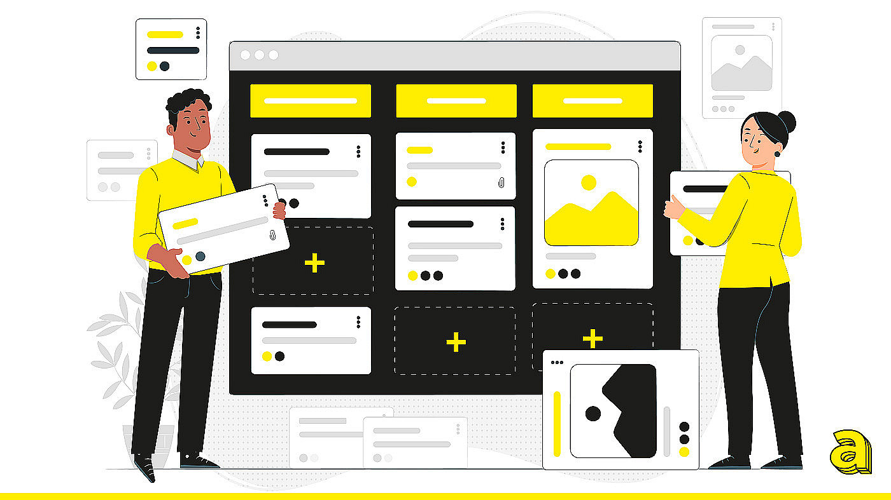
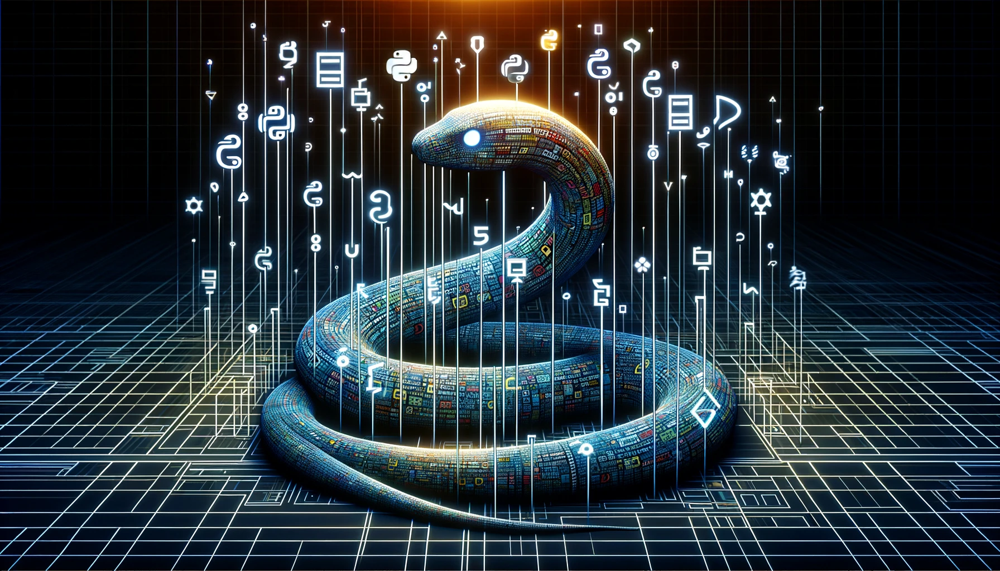

HTML
Es uno de los lenguajes marcados más usados a la hora de crear páginas web. Se elabora a través de un conjunto de códigos cortos clasificados como archivos de texto en las etiquetas. Cada etiqueta cuenta con funciones diferentes y se pueden encontrar a través de los buscadores. HTML es una de las tecnologías que todo/a desarrollador/a debe dominar, ya que sirve para describir el contenido de una web desde un párrafo hasta una imagen. Se encuentra en constante evolución, siendo HTML 5 su versión más actual.

CSS

CSS es una de las mejores tecnologías para desarrollo web y a la que más recurren los programadores gráficos a la hora de desarrollar sus proyectos. Es un lenguaje funciona como las tecnologías frontend que sirve, sobre todo, para indicar la representación visual de las estructuras HTML. De esta manera, el lenguaje CSS sirve para acotar y trazar el aspecto visual de las etiquetas generadas por el HTML.
JAVASCRIPT
Uno de los lenguajes más apreciados es JavaScript, ya que con él es muy fácil crear sitios interactivos y dinámicos (como animaciones, formularios, juegos, galerías, botones, etc.), los cuales son muy demandados hoy en día. Su código también se refleja en el frontend. Se basa en objetos que se pueden acomodar y reutilizar de forma sencilla.

PYTHON

La popularidad de Python se debe a que, además de tener una gran cantidad de librerías, es totalmente gratis. Asimismo, destaca por su sencillez y potencia, ya que usa menos líneas de código que cualquier otro lenguaje de programación para cualquier aplicación que se ejecute. Esto supone una gran ventaja respecto a otros tipos de lenguajes de programación y la constituye, sin duda, como una de las tecnologías web más usadas.